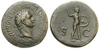

What is the Mark of the Beast?
Part I: The Mark of the Beast-What Is It?
The following is not an exhaustive explanation of the Mark of the Beast found in Revelation 13 and 14. I have endeavored to cover some of the main points to show that the Mark of the Beast has nothing to do with the Roman Catholic Church, the observance of the Sabbath, or Christians that meet on Sunday to worship God, or having a micro chip or bar code installed on their person. I might also add the mark of the beast does not apply to any person living since the first century.
There are four major views of interpretation of Revelation.
1. Preterist view,in which all prophecy found in Revelation has happened in the past. Conditional Preterist view of Revelation to which I subscribe. A term which may be new to many, which means some of the prophecy is based on conditionality. John's readers may not have understood all the details of the prophecy till close to the time of fulfillment. Our job 2000 years later is not to understand every minute detail, but what was meant to transpire under the correct circumstances. In the case of the "seven churches" the coming crisis for the faithful Christians subsided with the death of Domitian. The prophecy regarding the Second Coming of Christ is yet to come as it was not fulfilled in John's day.
2. Historicist view, is a minority view held mostly by the Seventh-day Adventist sect. It is a prewritten course of history from the time of the Apostles to the end of the world. Example, the seven churches of Revelation represents seven time periods of history rather than the actual churches of that time. The SDA Church being the Laodicean Church.
3. Futurist view(good ol' Hal Lindsey's view) futurists assumes that the majority of prophecy of Revelation has never been fulfilled and they await the fulfillment.
4. Spiritual view(which comes closer to the New Ages thinking). This view is often called the idealist or symbolic approach. To them Revelation does not attempt to find individual fulfillments of the visions but a great drama depicting spiritual realities such as the conflict between Christ and Satan and the saints and the antichrist. Fulfillment is seen as spiritual or as recurrent in historical events. The prophecy therefore is to apply to Christians in any era of history and may have many fulfillments throughout history.
The book of Revelation is written in symbolic and allegorical language. As such, to try and assign an infallible literal meaning is the cause of much confusion in the denominational community.
It is important to understand to whom John was writing and its purpose and to understand the time in history that the Mark of the Beast took place. The focus of Revelation is on the Church in John's day which was being persecuted by Imperial Rome.
Who was John writing to when he wrote Revelation?
Rev 1:11 (NIV) ...which said: “Write on a scroll what you see and send it to the seven churches: to Ephesus, Smyrna, Pergamum, Thyatira, Sardis, Philadelphia and Laodicea.”
John was writing to the seven churches of Asia, which is modern day Turkey.
Although there were many other churches in existence at this time, God chose only these seven churches to send this message. It was not a message to the Christian world. He certainly was not writing to man/woman founded denominations and churches that came into existence 2000 years later with their hundreds if not thousands of private interpretations of the end of the world scenario.
What was the purpose of this message?
Rev 1:1 (NIV) The revelation of Jesus Christ, which God gave him to show his servants what must soon take place.
To show his servants what was soon to take place. His servants would be those servants alive and hearing the message in the seven churches in the seven cities. While Daniel's vision was not to take place "soon" as he was told to seal the message till the time of the end.
Dan 12:4 (NIV) But you, Daniel, close up and seal the words of the scroll until the time of the end. Daniel and his generation would not live to see the fulfillment.
Dan 12:11-13 (NIV) “From the time that the daily sacrifice is abolished and the abomination that causes desolation is set up, there will be 1,290 days. Blessed is the one who waits for and reaches the end of the 1,335 days. “As for you, go your way till the end. You will rest, and then at the end of the days you will rise to receive your allotted inheritance.”
Now notice John's instructions, that is not to seal up the prophecy as the time is near.
Rev 22:10 (NIV) Then he told me, “Do not seal up the words of the prophecy of this book, because the time is near.
What were the results of reading and hearing this message?
Rev 1:3 (NIV) Blessed is the one who reads the words of this prophecy, and blessed are those who hear it and take to heart what is written in it, because the time is near.
The "blessing" comes after a lector (church leader) would read this divine message from God to those gathered in each of the seven churches, and they would hear and take to heart that the "time is near" for fulfillment.
To make this prophecy, "the time is near" applicable to us 2000 years later, is without foundation. Suppose John told the hearers that this is to take place 2000 years later. They no doubt would ask, "what do you mean then by "the time is near"?
Rev 14:9-10 (NIV) A third angel followed them and said in a loud voice: “If anyone worships the beast and his image and receives his mark on the forehead or on the hand, he, too, will drink of the wine of God’s fury, which has been poured full strength into the cup of his wrath. He will be tormented with burning sulfur in the presence of the holy angels and of the Lamb.
God is warning the members of the seven churches against worshipping and giving homage to the beast and his image. It was a warning about worship. The warning by God was simple. If you choose to worship the beast and his image and receive his mark you will be punished with burning sulfur.
The Sea Beast: Who is it?
Rev 13:1 (NIV) And I saw a beast coming out of the sea. He had ten horns and seven heads, with ten crowns on his horns, and on each head a blasphemous name. 2The beast I saw resembled a leopard, but had feet like those of a bear and a mouth like that of a lion. The dragon gave the beast his power and his throne and great authority.
The Sea Beast had seven heads and ten horns which is a composite picture of Daniel's four beasts found in Daniel 7:1. The heads represented with crowns could very well represent the Roman emperor's men with kingly authority. One head seemed to have a mortal wound but was healed, Rev. 13:3. This could be Julius Caesar or Nero. The death did not kill the beast and the beast lived on with other Caesars in control of Rome. Most all Bible expositors agree that the seven headed Sea Beast is Imperial Rome.
The dragon is continuing his fight against the early church (the seed of the woman), in Rev 12:12, now using the Sea Beast as his medium. We can see the persecution warning is imminent to the NT Church. We have the dragon, giving power and authority to Imperial Rome to persecute and put to death Christians. Rev 12:12 - Rev 12:14 (NIV) 12 Therefore rejoice, you heavens and you who dwell in them! But woe to the earth and the sea, because the devil has gone down to you! He is filled with fury, because he knows that his time is short.” 13When the dragon saw that he had been hurled to the earth, he pursued the woman who had given birth to the male child. 14The woman was given the two wings of a great eagle, so that she might fly to the place prepared for her in the desert, where she would be taken care of for a time, times and half a time, out of the serpent’s reach.
This is the NT Apostolic Church going into hiding from the dragon's inspired Roman persecution. Satan and his angels lost their place in heaven before creation and here we have the devil being cast down from heaven as "the accuser of our brothers" after Calvary, thus showing the dragon/Rome persecution was 2000 years ago. Rev 12:9 - Rev 12:11 (NIV) 9The great dragon was hurled down—that ancient serpent called the devil, or Satan, who leads the whole world astray. He was hurled to the earth, and his angels with him. 10Then I heard a loud voice in heaven say: “Now have come the salvation and the power and the kingdom of our God, and the authority of his Christ. For the accuser of our brothers, who accuses them before our God day and night, has been hurled down.
The Sea Beast makes war and conquers the saints. Rev 13:7 (NIV) He was given power to make war against the saints and to conquer them. When Satan, the Dragon, could not kill the son of the woman (Jesus) he vents his anger on the remaining (remnant) ones by using Imperial Rome as his instrument to cause fear and death. See Rev. 12:17.
Rev 13:11-18 (NIV) Then I saw another beast, coming out of the earth. He had two horns like a lamb, but he spoke like a dragon. He exercised all the authority of the first beast on his behalf, and made the earth and its inhabitants worship the first beast, whose fatal wound had been healed. And he performed great and miraculous signs, even causing fire to come down from heaven to earth in full view of men. Because of the signs he was given power to do on behalf of the first beast, he deceived the inhabitants of the earth. He ordered them to set up an image in honor of the beast who was wounded by the sword and yet lived. He was given power to give breath to the image of the first beast, so that it could speak and cause all who refused to worship the image to be killed. He also forced everyone, small and great, rich and poor, free and slave, to receive a mark on his right hand or on his forehead, so that no one could buy or sell unless he had the mark, which is the name of the beast or the number of his name. This calls for wisdom. If anyone has insight, let him calculate the number of the beast, for it is man’s number. His number is 666.
The Earth Beast follows immediately after the Sea Beast and they work together in unison to persecute the saints, and not to follow after the demise of the Sea Beast, as some teach, being Papal Rome. Here we need to say that the dragon, earth, and sea beast are one as well as the Caesars that is being controlled by the dragon. The Earth Beast forces worship of the Sea Beast by setting up and image to honor him. Throughout Rome there were temples with statues and images of the Caesars and the Roman gods. This represented the Roman Empire. And those that would worship the beast (Rome/Caesars) would receive the mark and number of the beast.
The Devil, Sea Beast, Earth Beast also Called the False Prophet Meet Their End.
The Unholy Trinity—the Dragon, the Sea Beast, the Earth Beast also called the False Prophet are thrown into the Lake of Fire.
Rev 16:13 (NIV) Then I saw three evil spirits that looked like frogs; they came out of the mouth of the dragon, out of the mouth of the beast and out of the mouth of the false prophet.
The devil, beast, and false prophet are thrown in the lake of fire.
Rev 19:20 (NIV) But the beast was captured, and with him the false prophet who had performed the miraculous signs on his behalf. With these signs he had deluded those who had received the mark of the beast and worshiped his image. The two of them were thrown alive into the fiery lake of burning sulfur.
Rev 20:9-10 (NIV) 10And the devil, who deceived them, was thrown into the lake of burning sulfur, where the beast and the false prophet had been thrown. They will be tormented day and night for ever and ever.
Now the members of the seven churches know that the Sea Beast is the Roman Empire and the Earth Beast/False Prophet that forces cultic emperor worship is the temple priests.
The Mystery Number 666, who is it?
John now provides his readers with an identification of the Beast in a very different form:
Rev 13:16-18 (NIV) He also forced everyone, small and great, rich and poor, free and slave, to receive a mark on his right hand or on his forehead, so that no one could buy or sell unless he had the mark, which is the name of the beast or the number of his name. This calls for wisdom. If anyone has insight, let him calculate the number of the beast, for it is man’s number. His number is 666.
John would not give the members of the seven churches a puzzle that they could not solve. Part II section which follows shows that 666 had nothing to do with the Pope of Rome. For John to make this apocalyptic message against the Pope and the Catholic Church would have made no sense to the first century Christians as there were no popes at this time in history. John made it clear that the “time” of the prophecy was “near”. It was not a distant 2000 years later.
Most Bible expositors give us two candidates from Imperial Rome, Nero and Titus Flavius Domitianus. My choice is Domitian, (A.D. 81-96) the very Roman Emperor who was beginning to demand that his citizens worship him, virtually as a god, at the very time that John penned his prophecy. This simple historical detail is beyond all quibble. Most importantly, his official title in Latin was Imperator Caesar Domitianus Augustus Germanicus. This was rendered as Autokrator Kaisar Dometianos Sebastos Germanikos for his Greek-speaking subjects. And in turn, for their coins, this abbreviated to A.KAI.DOMET.SEB.GE=666 (1+20+1+10+4+70+40+5+300+200+5+2+3+5).
How could they possibly miss John’s point, or even look elsewhere, with the very coins with his picture jangling in their pockets had his picture! And of course Domitain's name added up to 666. It is significant that, contrary to every other explanation of 666 of which I am aware, the Domitian employs every last letter of his official title in Greek in summing to 666! One of the threats facing the NT Christians was economic. They would not be able to buy or sell.
Rev 13:17 (NIV) ...so that no one could buy or sell unless he had the mark, which is the name of the beast or the number of his name.

Obverse:Head of Domitian laureate, encircled by CAES DIVI AVG VESP F DOMITIANVS COS VII.
Reverse: Minerva advancing brandishing javelin in right hand and holding shield in left hand. S C to left and right in field.
“John obviously did not expect his readers who had understanding (v.17) to have any difficulty in identifying the beast, since they could simply calculate the meaning of this cryptogram. Here using English characters, the Hebrew form of "Caesar Nero" is Nrwn Qsr (pronounced "Neron Kaiser"). The value of the seven Hebrew Letters is 50, 200, 6, 50, 100, 60, and 200 respectively. The total is 666. This is the solution advocated by David S. Clark, Jay Adams, Kenneth Gentry, David Chilton, and most others.” Revelation Four Views, p. 302. I would like to note in order to get 666 from Nero, it has to be an obscure alternate spelling of Neron Caesar.
"Nero Caesar as spelt in Hebrew or Aramaic (precisely the required spelling) appears on an Aramaic document of Nero's reign from the Wadi Murabba'at, in Jordan)." New International Bible Commentary, p.1616.
The Caesars erected temples throughout Rome. Each emperor was called Augustus or Sebastos, meaning One to be worshiped; they also took on the name divus (god) and even Deus and Theos (God).
The Mark of the Beast prophecy was fulfilled in the first century and not 2000 years later. The Roman Empire were persecuting and putting to death Christians by the thousands, in the arenas. They were being made human torches, killed in gladiator events, and eaten by wild animals because they would not worship the false gods of Rome. Emperor worship was required as the Caesars claimed they were gods and demanded worship. The Mark of the Beast was a warning to Christian Jews under the New Covenant as well as Gentile converts not to give worship to Rome which was due only to God.
Part II: Ellen G. White's Non-Biblical View of the Mark of the Beast
SDA pastors, evangelists and church members use the non-biblical teaching of EGW's "Mark of the Beast" visions in seminars, publications, Bible studies, and the internet to scare people into joining their church. After all no one wants to receive the dreaded EGW mark of the beast.
Ellen G. White the Seventh-day Adventist prophetess tells us in many of her visions that the Mark of the Beast is "the observance" of the first day of the week (Sunday). A few years later she tells us that when a national Sunday law is enacted, people will receive the Mark of the Beast when they observe Sunday.
She wrote about this remarkable non-biblical apocalyptic doctrine in many of her books. She tells us that God gave her the light contained in Great Controversy and that it was God speaking to the people. So we can say EGW received her non-biblical Mark of the Beast doctrine from her catatonic visions.
"While writing the manuscript of 'Great Controversy,' I was often conscious of the presence of the angels of God. And many times the scenes about which I was writing were presented to me anew in visions of the night, so that they were fresh and vivid in my mind." —E. G. White letter 56, 1911. The Ellen G. White Writings, pp. 191, 192.
“God gave me the light contained in Great Controversy and Patriarchs and Prophets, and this light was needed to arouse the people to prepare for the great day of God, which is just before us. These books contain God's direct appeal to the people. Thus He is speaking to the people in stirring words, urging them to make ready for His coming. The light God has given in these books should not be concealed.” —MS 23, 1890.
EGW taught her followers that the Sabbath is the “great test question” of loyalty. God has never given Sabbath keeping as a “loyalty test” for the new covenant church much less an issue of loyalty before the second coming of Christ. God’s loyalty test for the last 2000 years is to accept Jesus as their Savior from sin.
The Last Great Test Is The Sabbath!
The Sabbath will be the great test of loyalty, for it is the point of truth especially controverted. When the final test shall be brought to bear upon men, then the line of distinction will be drawn between those who serve God and those who serve Him not. While the observance of the false sabbath in compliance with the law of the state, contrary to the fourth commandment, will be an avowal of allegiance to a power that is in opposition to God, the keeping of the true Sabbath, in obedience to God's law, is an evidence of loyalty to the Creator. While one class, by accepting the sign of submission to earthly powers, receive the mark of the beast, the other choosing the token of allegiance to divine authority, receive the seal of God. The Great Controversy, Chapter 38 page 605.
The Sabbath Is the Issue in the Final Conflict. The Sabbath is the great test question. It is the line of demarkation between the loyal and true and the disloyal and transgressor. This Sabbath God has enjoined, and those who claim to be commandment keepers, who believe that they are now under the proclamation of the third angel's message, will see the important part the Sabbath of the fourth commandment holds in that message. It is the seal of the living God. They will not lessen the claims of the Sabbath to suit their business of convenience. —Manuscript 34, 1897. Selected Messages, Book 3, page 423.
Where does the Bible tell us that the Sabbath is the "final test" for Christians and the seal of God is the Sabbath? It must be right along side of the text that Adventists always ask—where in the Bible was the Sabbath changed to Sunday?"
EGW tells us that the Mark of the Beast is keeping Sunday. How does anyone keep Sunday? It is not a Sabbath or a holy day? There are no laws found in the Bible to keep Sunday. Are Christians that meet for worship on Wednesday, Wednesday keepers? Christians that meet and worship God on Sunday are not acknowledging the pope of Rome, not honoring any pagan deity and will not receive the mark of the beast. This is cultic nonsense!
According to Ellen G. White, the mark of the beast Is:
OBSERVANCE OF THE FIRST DAY
"The sign, or seal, of God is revealed in the observance of the seventh-day Sabbath, the Lord's memorial of creation. . . . The mark of the beast is the opposite of this--the observance of the first day of the week." —8T p. 117 (1904).
"The mark of the beast is the papal sabbath." (Sunday) —Ev. p. 234 (1899).
KEEPING THE FIRST DAY OF THE WEEK
What Is the Mark of the Beast?--John was called to behold a people distinct from those who worship the beast and his image by keeping the first day of the week. The observance of this day is the mark of the beast —Letter 31, 1898. S.D.A. Bible Commentary, Vol. 7, page 979, paragraph 11.
"When the test comes, it will be clearly shown what the mark of the beast is. It is the keeping of Sunday." —7BC 980 (1900).
THE SIGN OF ALLEGIANCE TO ROME:
“But when Sunday observance shall be enforced by law, and the world shall be enlightened concerning the obligation of the true Sabbath, then whoever shall transgress the command of God, to obey a precept which has no higher authority than that of Rome, will thereby honor popery above God. He is paying homage to Rome and to the power which enforces the institution ordained by Rome. He is worshipping the beast and his image. As men then reject the institution which God has declared to be the sign of His authority, and honor in its stead that which Rome has chosen as the token of her supremacy, they will thereby accept the sign of allegiance to Rome--"the mark of the beast." And it is not until the issue is thus plainly set before the people, and they are brought to choose between the commandments of God and the commandments of men, that those who continue in transgression will receive "the mark of the beast." —The Great Controversy, page 449.
EGW’s death decree prophecy would include millions of Sabbatarians including Seventh-day Adventists, Jews, Seventh-day Baptists, Church of God Seventh-day, Seventh Day Pentecostals, and more than 400 other Sabbatarian sects in the United States alone. EGW never dreamed that there would be so many Sabbatarians when she wrote her theory. "I saw that God will in a wonderful manner preserve his people through the time of trouble."
"His people" in EGW's mind were SDAs.
Can anyone see born again Christians petitioning the government to have genocide committed against Sabbatarian Christians or any group of people that did not agree with them?
United States Government Will Put to Death Sabbath Keepers
In order for the United States to form an image of the beast, the religious power must so control the civil government that the authority of the state will also be employed by the church to accomplish her own ends. —The Great Controversy, p. 443.
When the leading churches of the United States, uniting upon such points of doctrine as are held by them in common, shall influence the state to enforce their decrees and to sustain their institutions, then Protestant America will have formed an image of the Roman hierarchy, and the infliction of civil penalties upon dissenters will inevitably result. —The Great Controversy, page 445.
This argument will appear conclusive; and a decree will finally be issued against those who hallow the Sabbath of the fourth commandment, denouncing them as deserving of the severest punishment and giving the people liberty, after a certain time, to put them to death. —The Great Controversy, pp.615, 617.
EGW's Death Decree Against Sabbath Keepers
"I saw that God will in a wonderful manner preserve his people through the time of trouble. As Jesus poured out his soul in agony in the garden, they will earnestly cry and agonize day and night for deliverance. The decree will go forth that they must disregard the Sabbath of the fourth commandment, and honor the first day, or lose their lives; but they will not yield, and trample under their feet the Sabbath of the Lord, and honor an institution of Papacy." —Advent Review and Sabbath Herald, April 27, 1911, No. 8 (Who will Receive the Mark of the Beast).
SDA proselyte and indoctrinate Christians into believing that to avoid the Mark of the Beast curse from God they must keep the Sabbath and join God’s remnant SDA Church. SDAs and those they brainwash do not realize that God does not put the Mark of the Beast on any one that worships on Sunday or any other day of the week.
SDAs are so paranoid that they are continually reading the newspapers and watching TV to see if the United States government is making any Sunday blue laws, or if the Pope of Rome is promoting Sunday keeping with efforts to unite Protestant denominations with Rome as a fulfillment of EGW's prophecies. It is the Pope's responsibility to promote Sunday as it is a doctrine of his church. This is the same as the SDA General Conference President that promotes the Sabbath as a doctrine of EGW.
Identifying organized church worship on Sunday as the Mark of the Beast is exegetically impossible.
EGW's Beast Questions to Think About.
- Where is the text found that tells us that the MARK OF THE BEAST is the observance of Sunday?
- Where does the Bible tell us that the "mark of the beast is the papal Sabbath"? Where is the historical proof that any Pope changed the seventh day Sabbath to Sunday?
- Without proof that a Pope changed the Sabbath to Sunday, how can Sunday be a “Papal Sabbath”?
- Because Catholic Church makes the claim that their church changed Sabbath to Sunday, does it make it true? I ask the SDAs, do you believe the Catholic Church when they claim that Peter was the first Pope? Or that the priests have power to forgive sins? Or that it is biblical to pray to dead saints or in transubstantiation that the bread and wine in the mass is the actual turned into body and blood of Christ?
- The Catholic Church has never acknowledged any Pope changing the Sabbath.
The Number of the Beast is 666.
Adventists teach that the number (666) is the number of a man's name. They argue that it is one of the Pope's supposed titles--they invariably give is Vicarius Filii Dei, which means "Vicar of the Son of God"--adds up to 666 in Latin numerals. Did all or any of the Popes have this name?
The Vicarius Filii Dei 666 Argument Fails.
- Vicarius Filii Dei adds up to 666, is not a title of the Pope nor was it ever written on the Pope's miter or tiara.
- It is similar to one of his authentic titles, Vicarius Christi, but this does not add up to 666.
- The members of the seven churches of Asia would not be calculating the number of the beast 666 in Latin. It is a stretch to use Latin to calculate the number of the beast when Revelation was written in Greek.
- The mark is the number of a man's name, not a man's title or office such as Pope or Vicarius Christi. Which Pope is the beast of Revelation? It is a man's name not men's name.
- No record has been found where any Pope change the seventh day Sabbath to a Sunday Sabbath. Popes have approved the doctrine of Sunday Sabbath.
- There is no record of the Sabbath being the mark of any Pope's authority.
- Many people's names can be made to total 666. (It doesn't follow that because a person's name can be made to total 666 he is the beast of Revelation.) Even Ellen Gould White name can add up to total 666. Ellen G. White's mark of the beast fantasy is a cultic doctrine and just as much a fantasy as found in the book The Late Great Planet Earth.
There has been thousands and perhaps that many books written on Revelation with theories of what is the Mark of the Beast. And how people will receive the mysterious number 666 on their forehead and hands. We can be sure that it does not apply to the Pope of Rome, the Illuminati, or a micro chip embedded under the skin, etc.
I remember about 20 years ago that a tape was going around showing that the Illuminati, Masons, Rothschild and so on, were leading the world into the last days. I was not concerned then and I am not concerned now. The micro chip is now the fad as the mark of the beast on the Internet. A search on google comes up with many sites.
Christians need not concern themselves about the end of the world with Christ as their Savior. To worry is to not trust Christ. All is in God's hands and he has promised eternal life to those that trust in him. On the other hand those without the assurance of salvation want to know future events, to see the warning signs and see if they have time to change their immoral ways.
Examples of this fear is SDAs worries that the Pope and Protestant denominations will lobby and the United States Congress to pass a Sunday law. SDAs live in fear that if such a law is passed then those that worship on Sunday will hunt them down and put them to death. SDAs have more faith in their prophetess non-biblical visions than they do in the word of God.
- The Seal of God-What Is It?
- For understanding four major interpretations of Revelation, the very best I've found is Revelation Four Views:AParallel Commentary, by Steve Gregg. 528 pages. Thomas Nelson Publishers. ISBN 0-8407-2128-5. It lists the Preterist view (Sanders, Ratzlaff), the Historicist view (a minor view held by Seventh-day Adventists), the Futurist (most Evangelicals), and the Spiritual view (which comes closer to New Age thinking).
- The Pope nor the Catholic Church changed the Sabbath to Sunday.
- Not a Law For Christians This answers many of the Sabbatarian arguments for Sabbath keeping.
Sections
Robert K. Sanders, Founder and Editor of Truth or Fables, 1997–2012
Life Assurance Ministries assumed ownership of Truth or Fables in 2012
© 2016 Life Assurance Ministries. All rights reserved.